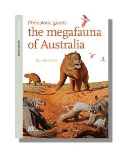

Prehistoric Giants: The Megafauna of Australia
Shortlisted for the CBCA Award for Nonfiction
Winner of the CBCA Shadow Judging for Nonfiction book of the year
Step back to a time when giant goannas and marsupial lions stalked the Australian bush. Short-faced kangaroos stood tall in the forests, while echidnas and wombats the size of sheep trundled through the undergrowth. Imagine herds of two-tonne Diprotodon roaming the plains, and flocks of flightless ducks bigger than emus strode around vast inland lakes.
Prehistoric Giants is a guide to the Australian megafauna of the Pleistocene — a time when humans shared the land with giants. Richly illustrated and brought to life by the art of Peter Trusler and others, Prehistoric Giants will reveal an Australia you’ve never seen before.
Suitable for ages 10-100
Published by Museum Victoria
Available in paperback
Available from all good bookstores
Find your local bookstore Buy now Aust/NZ
Praise for the book
‘vivid description of Australia as it was . . . easy to read, well organised and informative' —Cosmos
‘fabulous work by author Danielle Clode . . . who has brought the prehistoric giants to hair-raising life’ —Mercury Magazine
‘I don’t often have the pleasure of reviewing good, engaging Australian nonfiction. I hope I shall, though, after reading Prehistoric Giants. This book is a keeper.” —The Australian Reader
‘This stylish, well resourced study of the megafauna of Australia in the Pleistocene, provides a fascinating glimpse of the giants from our recent ancient past and explains how scientists 'resurrect' these creatures based upon such a paucity of fossil evidence. The different megafauna are divided up into accessible sub-groups for ease of identification and recognition, with a useful breakdown of the class, subclass etc., along with related species and their relative sizes and weights. The illustrations are well executed, and the photographs of similar modern animals and fossils are attractively presented.' —CBCA Judge's Report 2010